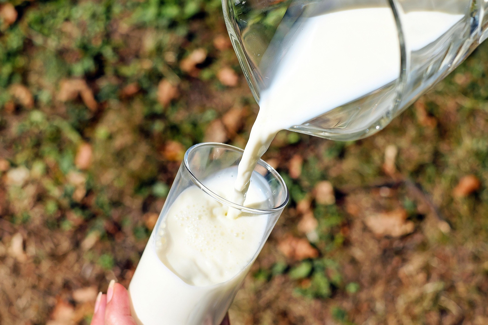

The New Zealand Dairy Industry
About the Dairy Industry
The dairy industry within New Zealand is one of the largest dairy industries in the world, making New Zealand about $27 billion NZD a year in export revenue. The dairy industry exports over 95% of its overall production, accounting for a major portion of the global dairy trade, being driven by large cooperatives like Fonterra. In 30 years, dairy exports have grown from just over NZ$2 billion per year to almost $20 billion.


Information About Cows
Cows are the primary animals in the dairy industry, providing milk for various products. They are typically raised on farms and are cared for by farmers to ensure their health and productivity. There are about 9.5 million cows within new zealand, about 5.7 million of which are dairy cows. These cows produce about 21 to 22.4 billion liters of milk annually, with only 5% of that milk being kept as milk, while the other 95% is processed into various dairy products.
Products
New Zealand's dairy industry produces a lot of different products, such as butter, ice creams, and cheese. these are all essential to new zealand as it one of new zealands main exports. Click here to view more information on some Dairy products
How Its Made
There are many different processes of making all of the different dairy products, which are in both the factories and the farms. Click here to view more information on how dairy products are made